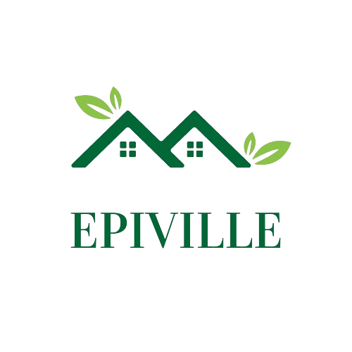

<mat-toolbar color="primary" class="epiville-navbar">
  <a mat-button routerLink="/">
    
  </a>

  <div class="nav-links">
    <button mat-button routerLink="/home/carte/classement">Carte Interactive</button>

    <button mat-button routerLink="/home/carte/classement">Classement des villes</button>

    <button mat-button routerLink="/home/dashboard">Tableau de bord</button>
  </div>
</mat-toolbar>
